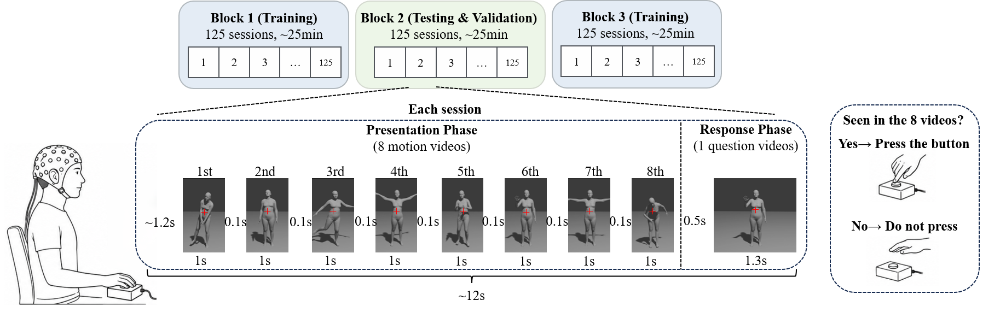

Human motion is governed by a hierarchical motor system where the brain provides high-level intentions and lower-level structures coordinate detailed dynamics. Existing brain-computer interfaces (BCIs) typically oversimplify this into constrained classification or low-dimensional control, failing to capture the richness of natural movement. Bridging this gap to achieve open-vocabulary, full-body motion synthesis remains challenging due to the substantial cross-modal divergence between sparse neural signals and high-dimensional kinematics, as well as the lack of large-scale paired EEG-motion datasets. To address this, we introduce EEG2MOTION, the first EEG-motion-text dataset for human motion synthesis, comprising nearly 20,000 paired samples across thousands of motions. Using this dataset, we first demonstrate via multimodal contrastive learning that non-invasive EEG embeddings can be effectively aligned with text, video, and motion representations to decode high-level semantics. We then propose EEG-conditioned Masked Motion Model (EMMM), a generative framework that unites an EEG encoder with a motion decoder to synthesize continuous, full-body human motions directly from brain activity. Experimental results show that EMMM generates coherent and realistic motion sequences from non-invasive brain signals. To the best of our knowledge, this is the first work to generate diverse full-body human motions from non-invasive brain signals, opening a new direction toward generative and open-vocabulary motor BCIs.

Our EEG2MOTION dataset utilizes a passive viewing and action observation paradigm. Subjects view rapid, dynamic human motion clips while their scalp EEG data is synchronously captured. Our spatial ablation results demonstrate that visual cortical networks play a major role in encoding high-level semantics under this paradigm, which are subsequently bridged with sensorimotor targets for holistic kinematics reconstruction.
We visualize 3D full-body motion clips synthesized by EMMM alongside the Ground Truth trajectories. Each block contains the Ground Truth movement (left) and the motion sequence generated by EMMM (right), conditioned on the corresponding textual descriptions.
@article{yourname2026emmm,
title={EMMM: EEG-conditioned Masked Motion Model for Human Motion Synthesis},
author={Your Lastname, Your Firstname and Co-authors},
journal={arXiv preprint},
year={2026}
}